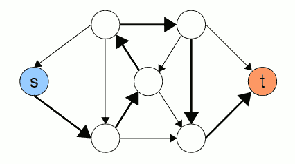
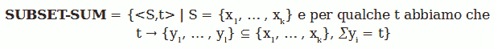

Torna alla pagina di Informatica Teorica
:: Informatica Teorica - Classe di complessità NP ::
Appunti & Dimostrazioni del 12 Maggio
Verificatori e classe NP
Iniziamo il magico viaggio nella classe di complessità NP considerando il problema HAMPATH, così definito:
HAMPATH = {<G,s,t> | G è un grafo diretto con un percorso Hamiltoniano tra s e t}
Scopo del problema è determinare l'esistenza in un grafo di un percorso Hamiltoniano tra due nodi, ovvero un cammino che li colleghi passando da tutti i vertici del grafo una e una sola volta. Ad esempio:

Questo problema gode della proprietà di verificabilità polinomiale, ovvero verificare l'esistenza di un percorso Hamiltoniano dato in ingresso è più semplice e veloce che determinare se un grafo ne contiene uno. Di questo secondo caso non è infatti nota alcuna soluzione tempo polinomiale.
Per dimostrare che un problema è verificabile polinomialmente avremo bisogno di un verificatore.
Il verificatore di un linguaggio A è un algoritmo V tale che:
A = {w | V accetta {w,c} per qualche stringa c}
Misuriamo il tempo di un verificatore in funzione della lunghezza di w, quindi un verificatore tempo polinomiale sarà eseguito in un tempo polinomiale rispetto alla lunghezza di w. Un linguaggio A è verificabile polinomialmente se ha un verificatore tempo polinomiale.
Il verificatore avrà quindi due ingressi:
- la stringa w (che ad esempio nell'HAMPATH è il grafo G più i nodi s e t);
- il certificato c, ovvero un'informazione aggiuntiva che ci permette di verificare che w sia membro del linguaggio A (che certificato potrei usare nell'HAMPATH? il percorso da testare!).
Finalmente possiamo definire cos'è una classe di complessità NP, la classe di linguaggi che hanno verificatori tempo-polinomiali. Nota bene: NP non sta per NOT-POLYNOMIAL come tu e tu stavate pensando, ma per nondeterministic polynomial. Una definizione alternativa potrebbe infatti essere che un problema è di classe NP se con una Macchina di Turing (da ora MdT) non deterministica, riesco a deciderlo in tempo polinomiale. Va da sé che se la MdT utilizzata fosse deterministica lo risolverei in un tempo esponenziale.
HAMPATH è NP?
Da quanto detto finora, per dimostrare che HAMPATH appartiene alla classe NP dovremo trovare una MdT non deterministica che lo risolva in tempo polinomiale (ovvero il tempo impiegato per percorrere il ramo di computazione più lungo).
Proponiamo dunque la MdT non deterministica N così definita:
N = "su ingresso <G,s,t>:
- genera in modo non deterministico una lista di m numeri corrispondenti agli m nodi del grafo G;
- verifica che non ci siano ripetizioni. Se ci sono il percorso non è Hamiltoniano, quindi RIFIUTA;
- verifica che il primo numero della lista corrisponda al nodo s, e che l'ultimo corrisponda al nodo t. Se non è così il percorso non è Hamiltoniano, quindi RIFIUTA;
- verifica se tra i nodi corrispondenti ai numeri della lista in quel dato ordine, esista effettivamente un arco che li colleghi. Se non è così il percorso non è Hamiltoniano, quindi RIFIUTA. Se invece tutti i test sono stati superati, ACCETTA."
Analizzando la complessità dell'algoritmo, è semplice osservare che sia la generazione della lista degli m nodi che i tre semplici test seguenti sono tutti eseguibili in tempo polinomiale. Quindi HAMPATH, avendo un verificatore tempo polinomiale, appartiene alla classe NP.
Teorema
Siccome a tutto questo non ci crediamo finché non abbiamo un bel teorema da dimostrare, ecco qua:
Un linguaggio è in NP se e solo se è deciso da una MdT tempo polinomiale nondeterministica.
Dimostrazione
Partendo dal presupposto che abbiamo già definito che un problema è NP se ha un verificatore tempo polinomiale, dividiamo la dimostrazione nei due sensi del "se e solo se":
(I) A ∈ NP -> A deciso da MdT non deterministica N in tempo polinomiale
Se A ∈ NP, allora avremo un verificatore V tempo polinomiale che lo verifica. Il tempo che ci metterà a verificarlo è un nk, con k costante (V -> nk).
Utilizziamo queste informazioni per definire N:
N = "su ingresso w di lunghezza n:
- seleziona in modo non deterministico una stringa c di lunghezza al più pari a nk (stiamo in pratica costruendo un certificato c da dare in pasto al verificatore V);
- esegui V su <w,c>;
- se V accetta, allora ACCETTA; altrimenti RIFIUTA."
N è evidentemente tempo polinomiale poiché ogni suo passo lo è.
(II) A deciso da N in tempo polinomiale -> A ∈ NP
In questo caso dovremo costruire V partendo dalla MdT non deterministica N, quindi:
V = "su ingresso <w,c>:
- simula N su w, e usa ogni simbolo di c come descrizione di scelta non deterministica da fare ad ogni passo;
- se il ramo trovato da N accetta, allora ACCETTA; altrimenti RIFIUTA."
Abbiamo in pratica usato il ramo di computazione accettante come certificato, e ne siamo usciti con un verificatore V tempo polinomiale che dimostra il secondo senso del "se e solo se" del nostro teorema.
CLIQUE è NP?
Partendo da un grafo non orientato, una CLIQUE è un sottoinsieme di nodi del grafo in cui ogni coppia è collegata direttamente con un arco. Il nostro problema è determinare se in un certo grafo c'è una clique di k nodi. Più formalmente:
CLIQUE = {<G,k> | G è un grafo non diretto con una k-clique}
Per verificare se il problema appartiene alla classe NP possiamo scegliere ora due strade: costruire o il verificatore V o la MdT non deterministica N e controllare che siano risolvibili in tempo polinomiale. Per non sbagliare le faremo entrambe.
..costruiamo il verificatore
Si noti che in questo caso la stringa di ingresso w è <G,k>, mentre il certificato è un sottoinsieme di k nodi di G (ovvero la solita soluzione che vogliamo testare essere valida).
V = "su ingresso <<G,k>,c>:
- verificare se c è un sottoinsieme di k nodi in G;
- verificare se G contiene tutti gli archi che connettono i nodi in c;
- se (1) e (2) vanno a buon fine, allora ACCETTA; altrimenti RIFIUTA."
Ogni passo viene ripetuto una volta sola, e sono tutte operazioni tempo polinomiali. V è dunque tempo polinomiale, quindi CLIQUE è in NP.
..costruiamo la MdT non deterministica
N = "su ingresso <G,k>:
- seleziona in modo non deterministico un sottoinsieme c di k nodi di G;
- verificare se c è un sottoinsieme di k nodi in G;
- verificare se G contiene tutti gli archi che connettono i nodi in c;
- se (2) e (3) vanno a buon fine, allora ACCETTA; altrimenti RIFIUTA."
Ogni passo viene ripetuto una volta sola, e sono tutte operazioni tempo polinomiali. N è dunque tempo polinomiale, quindi CLIQUE è in NP.
Come avrete intuito, una volta scritto il verificatore trovare anche la MdT diventa banale: al primo passaggio si genera un certificato in modo non deterministico, mentre gli altri passaggi sono identici a quelli di V.
SUBSET-SUM è NP?
Il problema SUBSET-SUM è così definito:

Il problema consiste cioè nel trovare un sottoinsieme di S tale per cui la sua somma sia pari a un numero t dato. Anche in questo caso per verificare che SUBSET-SUM è in NP ne troveremo sia il verificatore che la MdT non deterministica che lo decide, e controlleremo che siano risolvibili in tempo polinomiale.
..costruiamo il verificatore
In questo caso la stringa di ingresso w è <S,t>, mentre il certificato è un sottoinsieme di S.
V = "su ingresso <<S,t>,c>:
- verificare se c è una collezione di numeri la cui somma è t;
- verificare se i numeri di c sono tutti numeri di S;
- se (1) e (2) vanno a buon fine, allora ACCETTA; altrimenti RIFIUTA."
Ogni passo viene ripetuto una volta sola, e sono tutte operazioni tempo polinomiali. V è dunque tempo polinomiale, quindi SUBSET-SUM è in NP.
..costruiamo la MdT non deterministica
N = "su ingresso <S,t>:
- seleziona in modo non deterministico un sottoinsieme c di S;
- verificare se c è una collezione di numeri la cui somma è t;
- verificare se i numeri di c sono tutti numeri di S;
- se (2) e (3) vanno a buon fine, allora ACCETTA; altrimenti RIFIUTA."
Ogni passo viene ripetuto una volta sola, e sono tutte operazioni tempo polinomiali. N è dunque tempo polinomiale, quindi SUBSET-SUM è in NP.
Torna alla pagina di Informatica Teorica